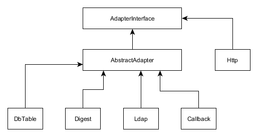
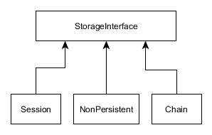
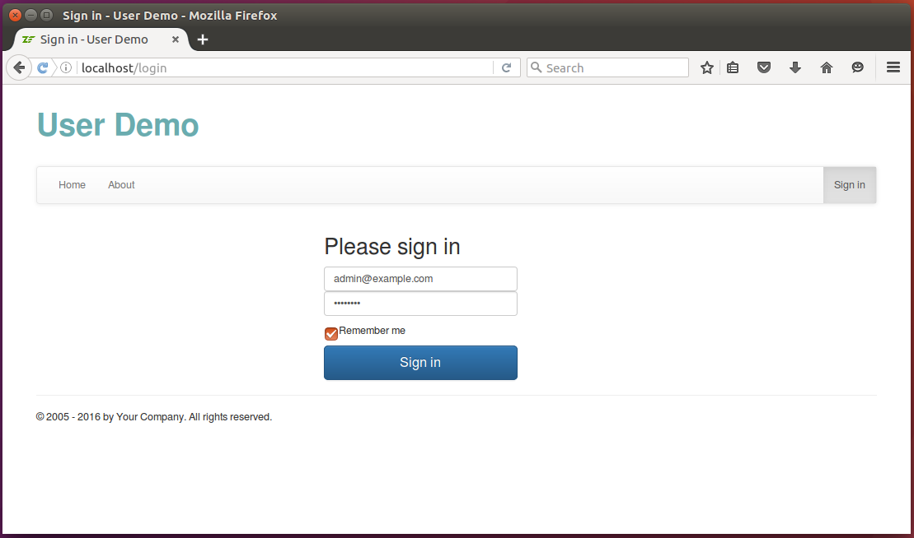

16.7. Implementar la autenticación del usuario
La autenticación es el proceso mediante el cual un usuario provee su nombre de usuario y contraseña y se revisa si estas credenciales son correctas. La autenticación típicamente significa que se revisa en la base de datos el nombre de usuario dado y si existe revisamos si el hash calculado para la contraseña dada coincide con el hash de la contraseña guardado en la base de datos.
Normalmente no guardamos contraseñas en crudo dentro la base de datos. En su lugar, guardamos un hash de la contraseña. Se hace así por razones de seguridad.
Una vez que el algoritmo de autenticación determina que el usuario y la contraseña son correctos regresa una identity de usuario, un identificador (ID) único para el usuario. La identity es normalmente guardada en la sesión, de esta manera el usuario no necesita autenticarse con cada petición HTTP.
En ZF3 hay un componente especial que permite implementar la autenticación del usuario, Zend\Authentication.
Podemos instalar este componente con Composer escribiendo el siguiente comando:
php composer.phar require zendframework/zend-authentication
Para que la autenticación funcione necesitamos tener instalado el componente
Zend\Sessiony el administrador de sesión configurado. La información sobre como hacer esto esta en el capítulo Trabajar con sesiones.
16.7.1. AuthenticationService
El componente Zend\Authentication provee una clase de servicio especial llamada AuthenticationService que
se encuentra en el espacio de nombres Zend\Authentication. Los métodos más útiles de este servicio se muestran
en la tabla 16.1 de abajo:
| Método | Descripción |
|---|---|
authenticate() |
Ejecuta la autenticación de usuario usando el adaptador. |
getAdapter() |
Trae el adaptador de autenticación. |
setAdapter() |
Coloca el adaptador de autenticación que implementa el actual algoritmo de autenticación. |
getStorage() |
Regresa el administrador de almacenamiento. |
setStorage() |
Coloca el administrador de almacenamiento. |
hasIdentity() |
Regresa true si la identidad de usuario ya ha sido guardada en la sesión. |
getIdentity() |
Recupera la identidad de usuario desde la sesión. |
clearIdentity() |
Remueve la identidad de usuario de la sesión. |
Como podemos ver al principio de la tabla, podemos usar el método authenticate() para ejecutar la autenticación.
Además, podemos usar los métodos hasIdentity(), getIdentity() y clearIdentity() para respectivamente probar,
recuperar y limpiar la identidad de usuario.
Sin embargo el servicio AuthenticationService es muy 'genérico', este no conoce nada sobre como
comparar el nombre de usuario y la contraseña contra la base de datos. Tampoco sabe nada sobre como
guardar la identidad de usuario en la sesión. Este diseño permite implementar el algoritmo de autenticación
y el almacenamiento apropiado.
El componente Zend\Authentication provee varios adaptadores de autenticación que implementan
algunos algoritmos de autenticación estándar (ver figura 16.9) y varios administradores de almacenamiento
que permiten guardar y recuperar la identidad de usuarios (ver figura 16.10).
 Figura 16.9 Adaptadores estandar de autenticación
 Figura 16.10 Administradores estandar de almacenamiento
Para nuestros propósitos podemos usar el administrador de almacenamiento Session sin necesidad de ningún
cambio en el código. Sin embargo, el adaptador de autenticación estándar no es apropiado para nosotros
por este razón usaremos Doctrine ORM. Tenemos que escribir nuestro propio adaptador. Felizmente, esto
es bastante simple de hacer.
16.7.2. Escribir el adaptador de autenticación
Un adaptador de autenticación debe implementar a la interfaz AdapterInterface, la que tiene solo
el método authenticate(). Este método debería revisar el correo electrónico del usuario y la contraseña
contra la base de datos. Lo haremos de la siguiente manera:
- Buscar el usuario con el
email(pensamos en el correo electrónico como el nombre de usuario). - Si el usuario con el
emailno existe regresamos un error. - Revisamos el
statusdel el usuario. Si el usuario esta "retired" prohibimos el acceso. - Calculamos el hash de la contraseña y la comparamos contra el hash del usuario almacenado en la base de datos.
- Si el hash de la contraseña no coincide regresamos un error.
- Si la contraseña es correcta regresamos un estado de éxito.
El método authenticate() regresa una instancia de la clase Zend\Authentication\Result. La clase
Result contiene el estado de la autenticación, el mensaje de error y la identidad del usuario.
El adaptador puede además tener métodos adicionales. Por ejemplo, agregamos los métodos setEmail()
y setPassword que usaremos para pasar el correo electrónico y la contraseña al adaptador.
Para crear el adaptador de autenticación agregamos el archivo AuthAdapter.php al directorio Service del modulo dentro de la carpeta src.
El ejemplo User Demo creamos un modulo separado llamado User y agregamos la funcionalidad relacionada con la autenticación y el administrador de usuario para ese modulo.
Coloca el siguiente código dentro del archivo:
<?php
namespace User\Service;
use Zend\Authentication\Adapter\AdapterInterface;
use Zend\Authentication\Result;
use Zend\Crypt\Password\Bcrypt;
use User\Entity\User;
/**
* Adapter used for authenticating user. It takes login and password on input
* and checks the database if there is a user with such login (email) and password.
* If such user exists, the service returns his identity (email). The identity
* is saved to session and can be retrieved later with Identity view helper provided
* by ZF3.
*/
class AuthAdapter implements AdapterInterface
{
/**
* User email.
* @var string
*/
private $email;
/**
* Password
* @var string
*/
private $password;
/**
* Entity manager.
* @var Doctrine\ORM\EntityManager
*/
private $entityManager;
/**
* Constructor.
*/
public function __construct($entityManager)
{
$this->entityManager = $entityManager;
}
/**
* Sets user email.
*/
public function setEmail($email)
{
$this->email = $email;
}
/**
* Sets password.
*/
public function setPassword($password)
{
$this->password = (string)$password;
}
/**
* Performs an authentication attempt.
*/
public function authenticate()
{
// Check the database if there is a user with such email.
$user = $this->entityManager->getRepository(User::class)
->findOneByEmail($this->email);
// If there is no such user, return 'Identity Not Found' status.
if ($user==null) {
return new Result(
Result::FAILURE_IDENTITY_NOT_FOUND,
null,
['Invalid credentials.']);
}
// If the user with such email exists, we need to check if it is active or retired.
// Do not allow retired users to log in.
if ($user->getStatus()==User::STATUS_RETIRED) {
return new Result(
Result::FAILURE,
null,
['User is retired.']);
}
// Now we need to calculate hash based on user-entered password and compare
// it with the password hash stored in database.
$bcrypt = new Bcrypt();
$passwordHash = $user->getPassword();
if ($bcrypt->verify($this->password, $passwordHash)) {
// Great! The password hash matches. Return user identity (email) to be
// saved in session for later use.
return new Result(
Result::SUCCESS,
$this->email,
['Authenticated successfully.']);
}
// If password check didn't pass return 'Invalid Credential' failure status.
return new Result(
Result::FAILURE_CREDENTIAL_INVALID,
null,
['Invalid credentials.']);
}
}
16.7.3. Crear la Factory para el AuthenticationService
Una vez que hemos implementado el adaptador podemos crear el AuthenticationService.
El AuthenticationService de ZF3 debe ser registrado en el administrador de servicio antes de poder usarlo.
Primero que todo, crearemos una factory para él. Agregar el archivo AuthenticationServiceFactory.php
dentro del directorio Service/Factory y colocar el código siguiente:
<?php
namespace User\Service\Factory;
use Interop\Container\ContainerInterface;
use Zend\Authentication\AuthenticationService;
use Zend\ServiceManager\Factory\FactoryInterface;
use Zend\Session\SessionManager;
use Zend\Authentication\Storage\Session as SessionStorage;
use User\Service\AuthAdapter;
/**
* The factory responsible for creating of authentication service.
*/
class AuthenticationServiceFactory implements FactoryInterface
{
/**
* This method creates the Zend\Authentication\AuthenticationService service
* and returns its instance.
*/
public function __invoke(ContainerInterface $container,
$requestedName, array $options = null)
{
$sessionManager = $container->get(SessionManager::class);
$authStorage = new SessionStorage('Zend_Auth', 'session', $sessionManager);
$authAdapter = $container->get(AuthAdapter::class);
// Create the service and inject dependencies into its constructor.
return new AuthenticationService($authStorage, $authAdapter);
}
}
En la factory hacemos lo siguiente. Primero, creamos una instancia del administrador de sesiones (se debe tener
configurado el administrador de sesiones) y creamos una instancia del administrador de almacenamiento de Session. Luego,
creamos una instancia del AuthAdapter. Finalmente, instanciamos el AuthenticationService e inyectamos las
dependencias (administrador de almacenamiento y el adaptador).
Registramos el AuthenticationService en nuestro archivo de configuración de la siguiente manera:
<?php
return [
'service_manager' => [
'factories' => [
\Zend\Authentication\AuthenticationService::class
=> Service\Factory\AuthenticationServiceFactory::class,
// ...
],
],
];
16.7.4. Agregar AuthController
La clase AuthController tendrá dos acciones:
El
loginAction()permite iniciar sesión en el sitio web (ver figuras 16.11 y 16.12) Podemos acceder a esta página escribiendo la URL "http://localhost/login" en la barra de navegación del navegador web.El
logoutAction()permite cerrar la sessión en el sitio web. Podemos acceder a esta página escribiendo la URL "http://localhost/logout" en la barra de navegación del navegador web.
 Figura 16.11 Página de Inicio de Sesión
 Figura 16.12 Página de Inicio de Sesión - Credenciales Invalidas
Figura 16.12 Página de Inicio de Sesión - Credenciales Invalidas
El código del controlador AuthController se presenta a abajo:
<?php
namespace User\Controller;
use Zend\Mvc\Controller\AbstractActionController;
use Zend\View\Model\ViewModel;
use Zend\Authentication\Result;
use Zend\Uri\Uri;
use User\Form\LoginForm;
use User\Entity\User;
/**
* This controller is responsible for letting the user to log in and log out.
*/
class AuthController extends AbstractActionController
{
/**
* Entity manager.
* @var Doctrine\ORM\EntityManager
*/
private $entityManager;
/**
* Auth manager.
* @var User\Service\AuthManager
*/
private $authManager;
/**
* Auth service.
* @var \Zend\Authentication\AuthenticationService
*/
private $authService;
/**
* User manager.
* @var User\Service\UserManager
*/
private $userManager;
/**
* Constructor.
*/
public function __construct($entityManager, $authManager, $authService, $userManager)
{
$this->entityManager = $entityManager;
$this->authManager = $authManager;
$this->authService = $authService;
$this->userManager = $userManager;
}
/**
* Authenticates user given email address and password credentials.
*/
public function loginAction()
{
// Retrieve the redirect URL (if passed). We will redirect the user to this
// URL after successfull login.
$redirectUrl = (string)$this->params()->fromQuery('redirectUrl', '');
if (strlen($redirectUrl)>2048) {
throw new \Exception("Too long redirectUrl argument passed");
}
// Check if we do not have users in database at all. If so, create
// the 'Admin' user.
$this->userManager->createAdminUserIfNotExists();
// Create login form
$form = new LoginForm();
$form->get('redirect_url')->setValue($redirectUrl);
// Store login status.
$isLoginError = false;
// Check if user has submitted the form
if ($this->getRequest()->isPost()) {
// Fill in the form with POST data
$data = $this->params()->fromPost();
$form->setData($data);
// Validate form
if($form->isValid()) {
// Get filtered and validated data
$data = $form->getData();
// Perform login attempt.
$result = $this->authManager->login($data['email'],
$data['password'], $data['remember_me']);
// Check result.
if ($result->getCode()==Result::SUCCESS) {
// Get redirect URL.
$redirectUrl = $this->params()->fromPost('redirect_url', '');
if (!empty($redirectUrl)) {
// The below check is to prevent possible redirect attack
// (if someone tries to redirect user to another domain).
$uri = new Uri($redirectUrl);
if (!$uri->isValid() || $uri->getHost()!=null)
throw new \Exception('Incorrect redirect URL: ' . $redirectUrl);
}
// If redirect URL is provided, redirect the user to that URL;
// otherwise redirect to Home page.
if(empty($redirectUrl)) {
return $this->redirect()->toRoute('home');
} else {
$this->redirect()->toUrl($redirectUrl);
}
} else {
$isLoginError = true;
}
} else {
$isLoginError = true;
}
}
return new ViewModel([
'form' => $form,
'isLoginError' => $isLoginError,
'redirectUrl' => $redirectUrl
]);
}
/**
* The "logout" action performs logout operation.
*/
public function logoutAction()
{
$this->authManager->logout();
return $this->redirect()->toRoute('login');
}
}
El método loginAction() acepta por GET el parámetro redirectUrl. La "redirección del URL" es una conveniente
característica que trabaja junto con el filtro de acceso que nosotros describiremos luego en este capítulo. Cuando
el visitante del sitio intenta acceder a la página web el filtro de acceso prohíbe el acceso a usuarios no autenticados,
el usuario es redireccionado a la página de "Login" y se pasa el URL de la página original como "redirección del URL".
Cuando el usuario inicia sesión es redireccionado a la página original automáticamente mejorando la experiencia del usuario.
16.7.5. Agregar la plantilla a la página de inicio de sesión
La plantilla (el archivo .phtml) para el inicio de sesión se ve de la siguiente manera:
<?php
$this->headTitle('Sign in');
$this->mainMenu()->setActiveItemId('login');
$form->get('email')->setAttributes([
'class'=>'form-control',
'placeholder'=>'Email address',
'required' => true,
'autofocus' => true
])
->setLabelAttributes([
'class' => 'sr-only'
]);
$form->get('password')->setAttributes([
'class'=>'form-control',
'placeholder'=>'Password',
'required' => true,
])
->setLabelAttributes([
'class' => 'sr-only'
]);
?>
<div class="row">
<div class="col-md-offset-4 col-md-3">
<form class="form-signin" method="post">
<h2 class="form-signin-heading">Please sign in</h2>
<?php if ($isLoginError): ?>
<div class="alert alert-warning" role="alert">
Incorrect login and/or password.
<a href="<?= $this->url('reset-password') ?>">Forgot password?</a>
</div>
<?php endif; ?>
<?= $this->formLabel($form->get('email')); ?>
<?= $this->formElement($form->get('email')); ?>
<?= $this->formLabel($form->get('password')); ?>
<?= $this->formElement($form->get('password')); ?>
<div class="checkbox">
<label>
<?= $this->formElement($form->get('remember_me')); ?> Remember me
</label>
</div>
<?= $this->formElement($form->get('redirect_url')); ?>
<?= $this->formElement($form->get('csrf')) ?>
<button class="btn btn-lg btn-primary btn-block" type="submit">Sign in</button>
</form>
</div>
</div>
La plantilla de vista usa la plantilla de página Sign In que viene con el Framework de CSS Bootstrap. Puedes encontrar la plantilla original aquí.
16.7.6. Agregar el servicio AuthManager
El AuthController trabaja de la mano con el servicio AuthManager. La lógica de negocio principal detrás
de la autenticación se implementa en el servicio. Vamos a describir al AuthManager en detalle.
El servicio AuthManager tiene los siguientes métodos responsables de la autenticación:
- El método
login(). - El método
logout().
El método login() (ver abajo) usa el AuthenticationService y el AuthAdapter de ZF3 que escribimos al principio
para ejecutar la autenticación del usuario. El método adicionalmente acepta el argumento $remenberMe que permite
extender la vida de la cookie de sesión hasta 30 días.
/**
* Performs a login attempt. If $rememberMe argument is true, it forces the session
* to last for one month (otherwise the session expires on one hour).
*/
public function login($email, $password, $rememberMe)
{
// Check if user has already logged in. If so, do not allow to log in
// twice.
if ($this->authService->getIdentity()!=null) {
throw new \Exception('Already logged in');
}
// Authenticate with login/password.
$authAdapter = $this->authService->getAdapter();
$authAdapter->setEmail($email);
$authAdapter->setPassword($password);
$result = $this->authService->authenticate();
// If user wants to "remember him", we will make session to expire in
// one month. By default session expires in 1 hour (as specified in our
// config/global.php file).
if ($result->getCode()==Result::SUCCESS && $rememberMe) {
// Session cookie will expire in 1 month (30 days).
$this->sessionManager->rememberMe(60*60*24*30);
}
return $result;
}
El método logout() remueve la identidad del usuario de la sesión y de esta manera el visitante deja de estar autenticado.
/**
* Performs user logout.
*/
public function logout()
{
// Allow to log out only when user is logged in.
if ($this->authService->getIdentity()==null) {
throw new \Exception('The user is not logged in');
}
// Remove identity from session.
$this->authService->clearIdentity();
}